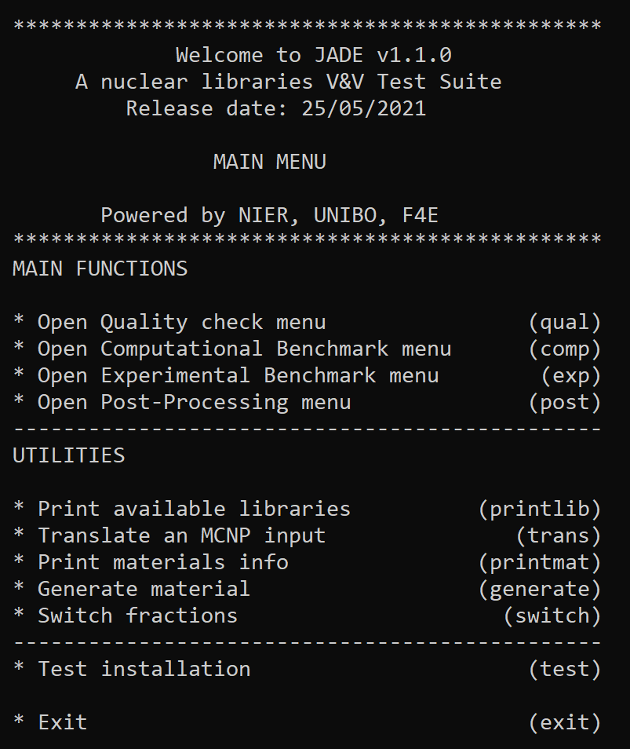

Usage¶
Once JADE is correctly configured (for additional details see Configuration), the application can be started with:
python main.py
The main menu is loaded at this point:
{kind=link}
This menu allows users to interact with the tool directly from the command prompt via pre-defined commands. The following main option are available typing from the main menu:
qualnot currently supported;compopens the Computational Benchmark menu;expopens the Experimental Benchmark menu;postopens the Post-processing menu;exitexit the application.
Additionaly to these main options, a series of “utilities” can be also accessed from the main menu. These are a collection of side-tools initially developed for JADE that nevertheless can be useful also as stand-alone tools. A detailed description of these functionalities can be found in Utilities.
Computational Benchmark menu¶

The following options are available from the computational benchmark menu:
printlibprint to video all the available nuclear data libraries in the xsdir file selected during JADE configuration;assessstart the assessment of a selected library. The library is specified directly from the console when the selection is prompted to video. The library must be contained in the xsdir file (available libraries can be explored usingprintlib);continuecontinue a previously interrupted assessment for a selected library. Currently, this option is implemented only for the Sphere Leakage benchmark.backgo back to the main menu;exitexit the application;
Experimental Benchmark menu¶

{kind=link}